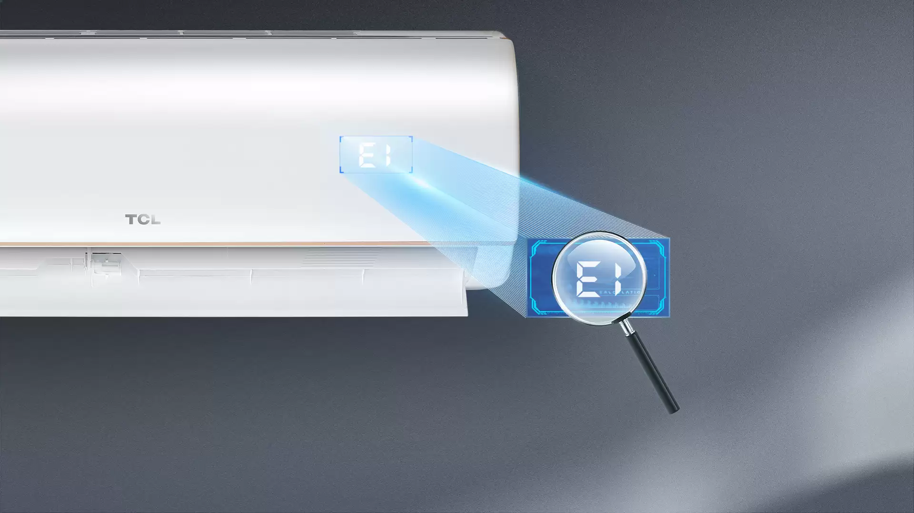
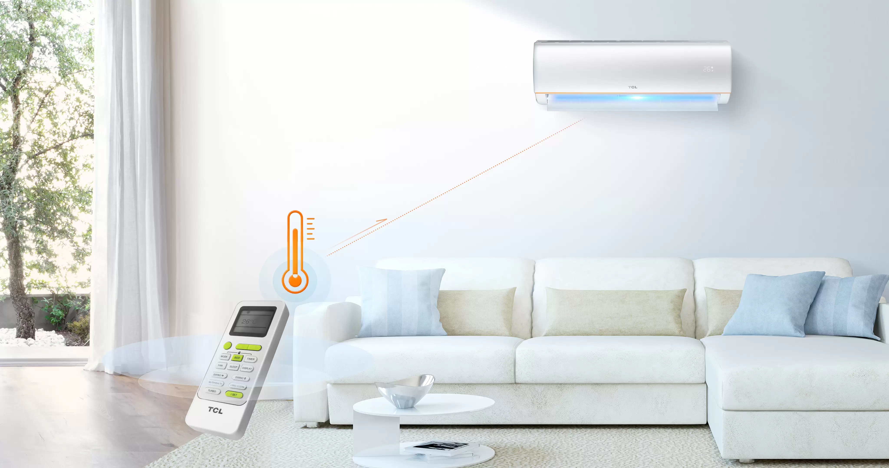
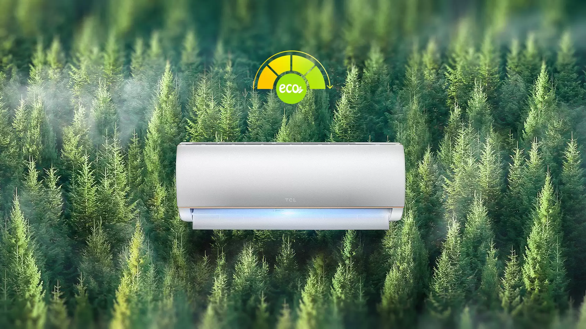
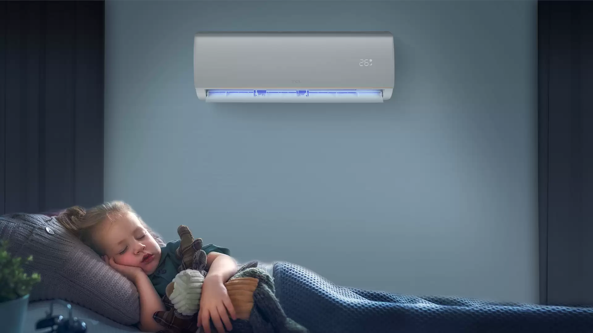
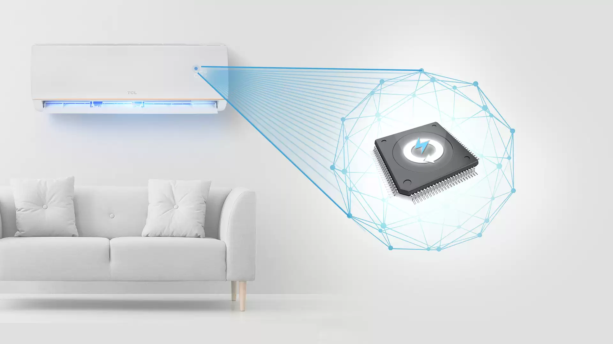
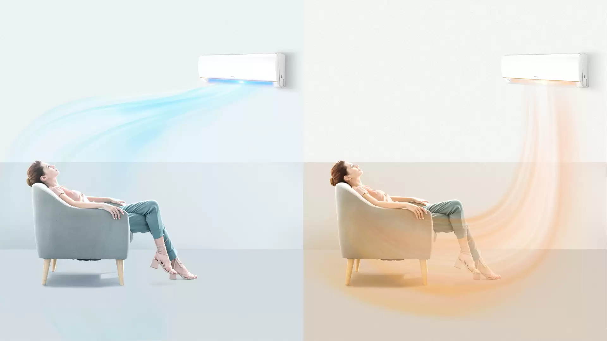
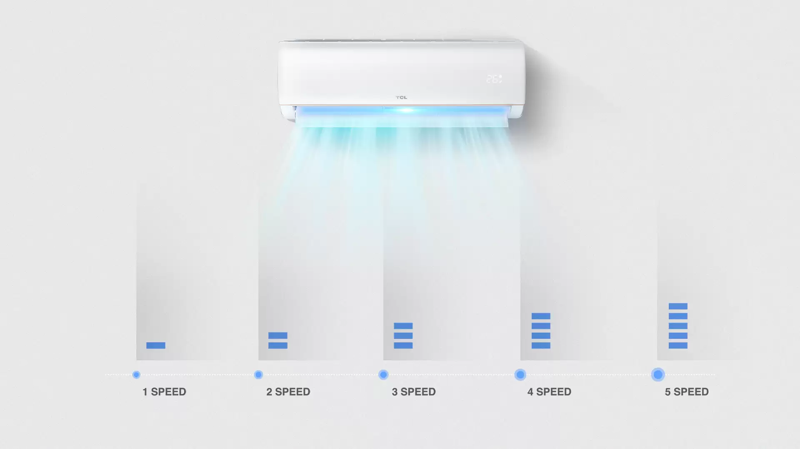
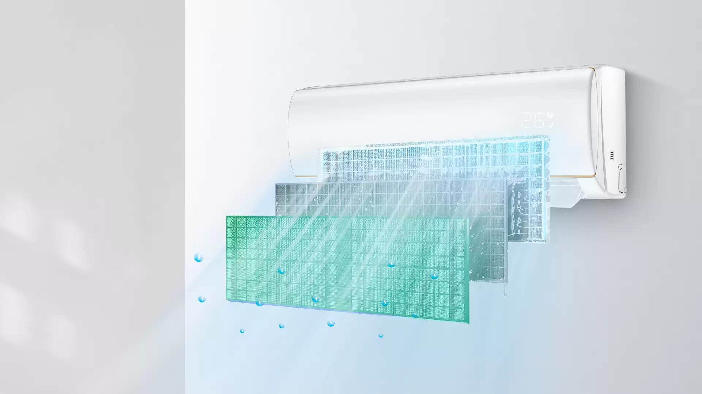
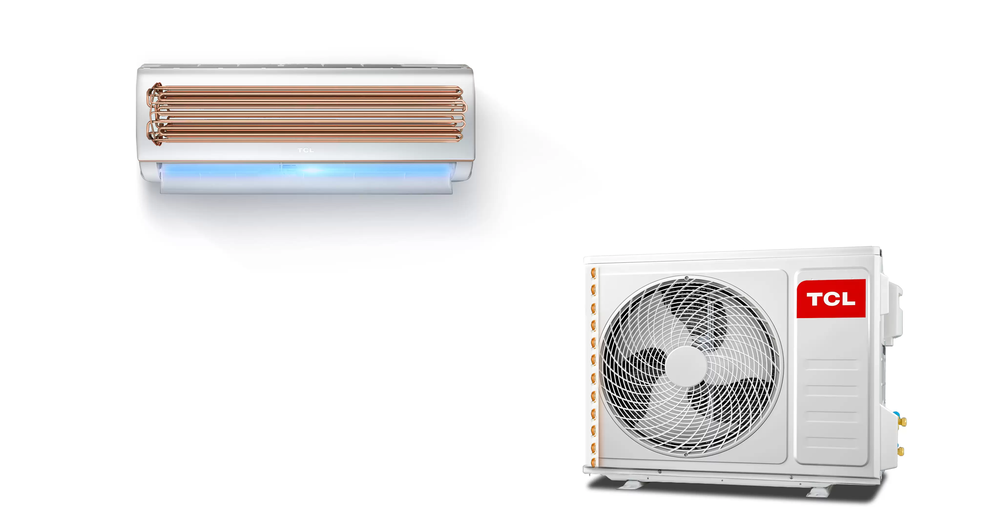

Diagnostic propriu
Dacă este detectată o defecțiune, aparatul de aer condiționat va afișa informații pe ecran - pentru diagnostic imediat și întreținere ușoară.

Mai întâi siguranța
Designul orientat spre siguranță, complet cu cutie de control al incendiului, asigură o funcționare pe termen lung și fiabilă.
iFeel
Modul iFeel vă permite să măsurați temperatura ambiantă direct folosind senzorul încorporat în telecomandă. Relaxați-vă într-un confort mai mare, cu citiri foarte exacte în cameră și fluxul de aer.

Mod ECO
Apăsați Mod Eco pentru un program fix de 26 ℃ optimizat. Conceput pentru a fi ecologic, a economisi la facturile de energie și a menține un interval de temperatură strâns. Ideal pentru lucrări solicitante, fără a vă agita în fundal.

Modul de dormit
Odată activat, modul de repaus va funcționa la o putere mai mică; menținând un tampon de temperatură îngust. Temperatura fluctuează în timpul utilizării prelungite pentru a menține un somn și o prospețime mai confortabile în cameră.

Mod silențios
Apăsați Mute pentru operație dezactivată la XX dB. Liniștea, mai mică decât cea a unui laptop obișnuit, vă asigură că vă puteți concentra asupra lucrurilor importante.

Flux de aer inteligent
Un sistem inovator de aer condiționat direcționează aerul rece în sus pentru o răcoritoare largă, de tip duș. Aerul cald este direcționat în jos pentru a crea un flux de aer mai uluitor ca o pătură. Aerul este distribuit mai uniform, evitând distribuția caldă și înfundată sau foarte rece.

Mod cu 5 trepte
Selectați un debit de aer de la 1 la 5. Setările mai largi decât soluțiile standard vă permit să setați viteza de aer ideală, potrivită cu precizie.

Indicație de curățare a filtrului
După o anumită perioadă de timp, aparatul de aer condiționat va reaminti automat utilizatorilor să facă curățenie. Respectați o întreținere ușoară pentru a asigura cea mai mare igienă și puritate a aerului.

Teava de cupru
Aparatul de aer condiționat cu tub de cupru este mai durabil și mai eficient în răcire.
